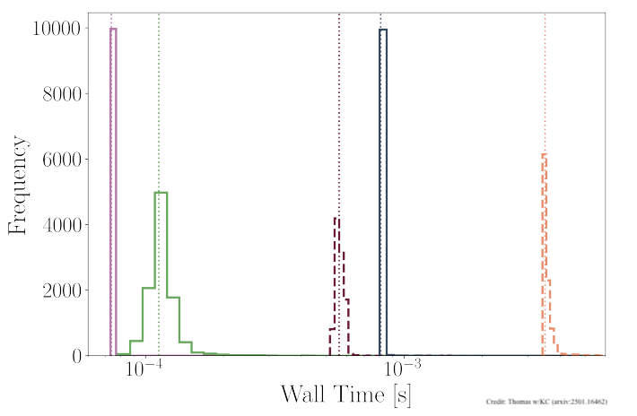

Waveform modeling and binary dynamics
 LIGO and (eventually) LISA need highly accurate theoretical models to properly interpret the gravitational-wave
signals they detect. General Relativity - Einstein's theory of gravity - provides the fundamental theoretical
framework for calculating these signals and describes how the spacetime itself behaves during a merger.
The most accurate way to study these processes is through numerical relativity, which uses computer simulations
to solve Einstein's complex field equations that analytical methods cannot handle.
Our research focuses on understanding the intricate orbital dynamics that occur when two massive compact objects
interact gravitationally. These systems exhibit highly non-linear behavior. We want to understand how this complex
physics gets encoded in the signal that detectors measure. We develop and study theoretical models that must account
for subtle but important effects like higher-order gravitational-wave modes (beyond the dominant quadrupole),
eccentric orbits (elliptical rather than circular), and spin-induced precession (how spinning objects cause
the entire orbital plane to slowly wobble like a gyroscope).
LIGO and (eventually) LISA need highly accurate theoretical models to properly interpret the gravitational-wave
signals they detect. General Relativity - Einstein's theory of gravity - provides the fundamental theoretical
framework for calculating these signals and describes how the spacetime itself behaves during a merger.
The most accurate way to study these processes is through numerical relativity, which uses computer simulations
to solve Einstein's complex field equations that analytical methods cannot handle.
Our research focuses on understanding the intricate orbital dynamics that occur when two massive compact objects
interact gravitationally. These systems exhibit highly non-linear behavior. We want to understand how this complex
physics gets encoded in the signal that detectors measure. We develop and study theoretical models that must account
for subtle but important effects like higher-order gravitational-wave modes (beyond the dominant quadrupole),
eccentric orbits (elliptical rather than circular), and spin-induced precession (how spinning objects cause
the entire orbital plane to slowly wobble like a gyroscope).

Numerical relativity simulations solve Einstein's field equations step-by-step over time, producing nearly exact solutions (limited only by numerical error) for how black holes interact and what gravitational waves they emit during mergers. However, setting up these simulations is challenging. Einstein's equations are incredibly complex - they are a system of ten coupled, non-linear partial differential equations that describe how matter and energy curve spacetime. Because of this complexity, it is not straightforward to choose the right starting conditions that will give you the specific binary black hole system you want to study. Caltech graduate student Taylor Knapp led an research project that developed and tested an iterative method to solve this initial conditions problem. An iterative method means you make an educated guess, run a simulation to see how close you got to your target, then adjust your starting conditions and try again, repeating this process until you achieve the desired result. This technique allows us to create simulations with specific target parameters for the binary system. For example, they can now reliably produce simulations where the black holes have a particular orbital eccentricity, a specific semi-major axis , or black holes spinning in precisely chosen directions. This level of control is crucial for building comprehensive models of gravitational-wave sources.
Theoretical models must not only be accurate, but also fast to evaluate. Caltech postdoctoral scholar Lucy Thomas is exploring methods based on neural networks to speed up our models. As a first application, we studied models for the outcome of a black hole merger. When two black holes merge, they form a single, remnant black hole that receives a "kick" that sends it moving through space at large velocities. Predicting the properties of this final remnant black hole - specifically its mass, spin, and kick velocity - is crucial for understanding merger events and analyzing gravitational-wave data. The theoretical model can predict these remnant properties from the initial binary parameters - the masses and spins of the two merging black holes. Our neural network surrogate builds upon an existing surrogate model that was already trained on a large database of numerical relativity simulations. Our approach achieves comparable accuracy to the original model but runs approximately ten times faster. Such speed improvements are essential for practical gravitational-wave data analysis, where thousands or millions of model evaluations might be needed for a single detection. The project's key innovation was a comprehensive exploration of the neural network design space to optimize performance. We systematically studied hyperparameters (like learning rates and regularization strength), tested different network architectures (varying the number of layers and neurons), and investigated how the amount of training data affected model accuracy.